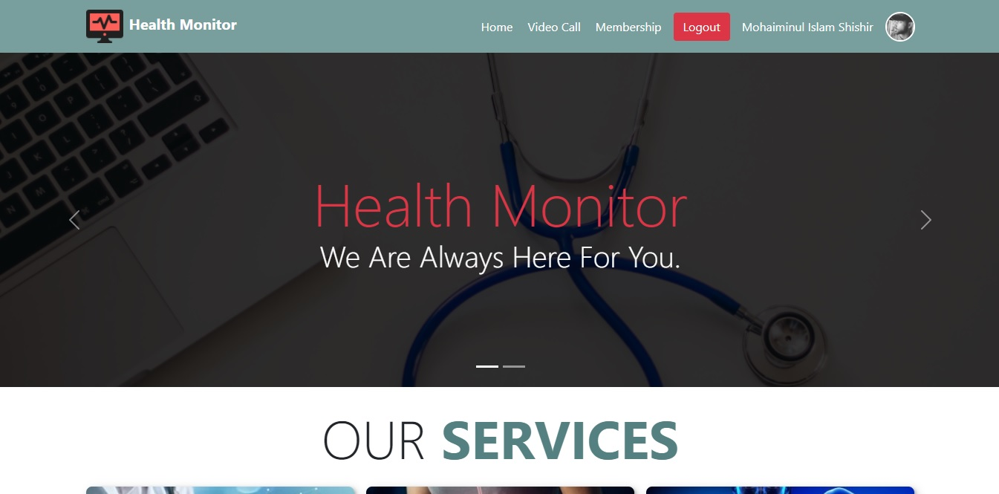
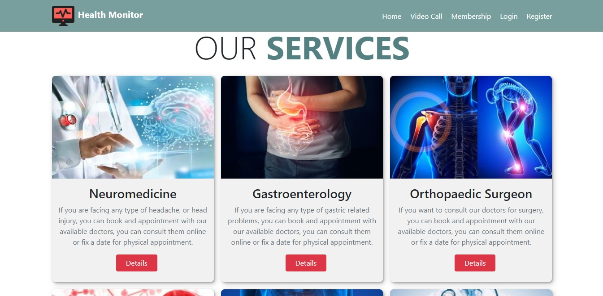
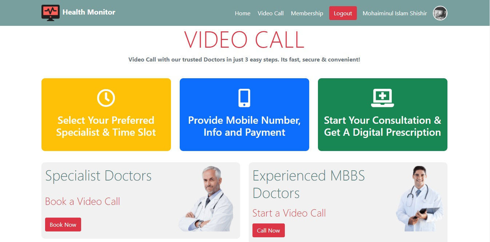

An online consultation platform where patients pick a medical field and consult an available doctor.

Health Monitor connects patients and doctors online. Patients register on the site and consult a doctor over the internet.
Doctors from many medical fields are available. Patients simply choose the field they need and consult an available doctor from it.
Create an account and log in to the app.
Move between pages without reloading the whole site.
Open the details of any individual medical service on its own route.
Protected pages can’t be opened without logging in.
After logging in, you’re taken straight to the page you were trying to visit.


Like what you see? Let’s build something together_
./say-hello